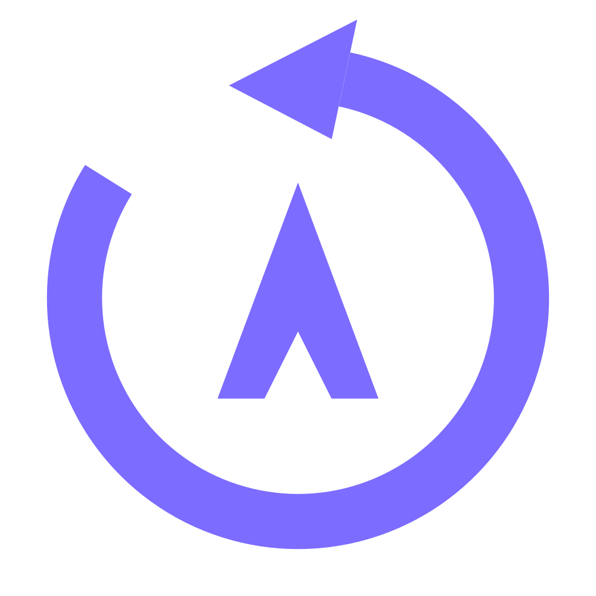

AfterclipMain mix is what ordinary players hear. Own track also saves it separately. Mute key is silenced by the mic mute key. An app is already part of desktop audio, so leave it out of the main mix if desktop audio is in it, or you'll hear it twice.
Press the marker key while recording to add a chapter you can jump to in most video players. Changes apply to your next recording.
Checking.
Changes save automatically.